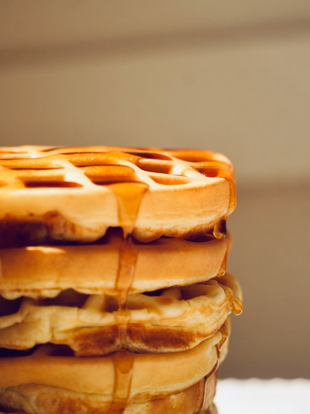

Waffle

Description
This recipe makes waffles that are crisp, yet perfectly fluffy on the
inside. Perfect for when you want to start out your day with a little
bit of sweetness, and it's very quick and easy to make!
Ingredients
- 2 cups all-purpose flour
- 4 teaspoons baking powder
- 2 tablespoons sugar
- 1 teaspoon salt
- 1 1/2 cups milk
- 1/3 cup melted butter
- 2 eggs
Steps
- In a large bowl, stir the flour, baking powder, sugar, and salt
together.
- In a another bowl, whisk the eggs, milk, and melted butter.
- Pour the dry mixture onto the wet mixture and whisk until smooth.
- Ladle the batter onto a preheated waffle iron.
- Close the iron and cook until the waffles are golden.